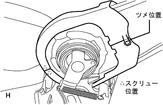

フロントシートASSY LH 組み付け |
| 1. フロントシート レッグ LH取り付け |
フロントシートフレームASSY LHにフロントシート レッグ LHをボルト6本で締め付ける。
| 2. フレーム ウエイト フロント No.2取り付け |
フレームウエイトフロントNo.2をへこませてフロントシートフレームASSYに取り付ける。
| 3. フロントシート バツク ストッパASSY RH取り付け |
フロントシート バツク ストッパASSY RHをナットで締め付ける。
| 4. シートクッションスプリング ダンパ取り付け |
ボルトで、シート クッション スプリング ダンパーを取り付ける。
| 5. リクライニングレリーズ ハンドルSUB-ASSY NO.1取り付け |
リクライニングアジャスタスペーサをフレームに取り付ける。
リクライニングトーションバーをフレームとリクライニングレリーズハンドルの間に入れ、トーションバーをフレームにかん合させる。
リクライニングレリーズハンドルをフレームにかん合させ、新品のEリングを取り付ける。
| 6. フロントシート プレート スプリング LH取り付け |
| 7. シートトラックコントロール ケーブルASSY取り付け |
ボルト2本で、シートトラックコントロールケーブルASSYを取り付ける。
| 8. フロントシートバツクカバー(インナ後側)取り付け |
フロントシートバツクカバーを取り付け、スクリューを取り付ける。
| 9. リクライニング トーション バー取り付け |
リクライニング トーションバーをフレームにかん合させる。
| 10. リヤシート ターン ロックプレート NO.1 LH取り付け |
スクリュー3本で、リヤシート ターン ロックプレート NO.1 LHを取り付ける。
| 11. リクライニングアジャスタアームCTR LH W/ケーブル取り付け |
リクライニングアジャスタスペーサをフレームに取り付ける。
リクライニングアジャスタアームCTR LH W/ケーブルをフレームにかん合させ、新品のEリングを取り付ける。
| 12. フロントシートバツクカバー(インナ前側)取り付け |
フロントシートバツクカバー(インナ後側)にかん合させる。
スクリューを取り付ける。
| 13. フロントシートバツクカバー(アウタ後側)取り付け |
フロントシートバツクカバーを取り付け、スクリューを取り付ける。
| 14. フロントシートバツクカバー(アウタ前側)取り付け |
フロントシートバツクカバー(アウタ後側)にかん合させる。
|  |
スクリューを取り付ける。
| 15. フロントシート アウタベルトASSY LH取り付け |
 |
ボルト2本でフロントシート アウタベルトASSY LH(リトラクタ部)を取り付ける。
| 16. フロントシート ショルダベルト ガイド取り付け |
シートベルトを通しツメをかん合させ、フロントシートショルダベルトガイドを取り付ける。
| 17. リヤシート ベルト ホルダ取り付け |
ツメをかん合させ、リヤシートベルトホルダを取り付ける。
| 18. リヤシート ベルト ホルダ NO.2取り付け |
シートベルトを通しツメをかん合させ、リヤシートベルトホルダNo.2を取り付ける。
| 19. フロントシート クッション シールド LWR LH取り付け |
 |
シートベルトを通し、フロントシートクッションシールドLWR LHを取り付ける。
| 20. サブシート ロックコントロール ケーブル取り付け |
サブシート ロックコントロール ケーブルを取り付ける。
| 21. リクライニング アジャスタ インサイドカバー LH取り付け |
 |
サブシート ロックコントロール ケーブルを通してツメをかん合させ、リクライニングアジャスタインサイドカバーLHを取り付ける。
スクリューを取り付ける。
| 22. リクライニング アジャスタ インサイドカバー RH取り付け |
ツメをかん合させ、リクライニングアジャスタインサイドカバーRHを取り付ける。
スクリューを取り付ける。
| 23. フロントシート クッション カバー＆パッド LH取り付け |
フロントシートクッションカバー&パッドの後側をフロントシートクッションシールドLWR LHにかん合させる。
フロントシートクッションカバー&パッド前側のJフックを確実にかん合させる。
 |
シートクッションフレームLHのツメを折り返す。
| 24. フロントシートバック パッド(カバー ツキ) LH取り付け |
ホグリングプライヤーを使用して、フロントシートバツクカバー & パッドＬＨをホグリングで取り付ける。
| 25. フロントシートヘッドレスト サポート取り付け |
 |
シートバツクにフロントシートヘッドレストサポート2個を取り付ける。
| 26. リヤシートバックロック ベゼル UPR取り付け |
 |
シートベルトを通し、フロントシートベルトホールカバーを取り付ける。
リヤシートバツクベゼルUPRのツメをかん合させる。
 |
スクリュー2本を取り付ける。
アウタシートベルトのアンカボルトを締め付ける。
| 27. フロントシートバック ボードSUB-ASSY LH取り付け |
シートベルトを通し、ケーブルを取り付ける。
ツメをかん合させシートバツクボードを取り付ける。
シートバツクボードのレバーを起こし、スクリューを取り付ける。
シートバツクカバーLHの下側をフロントシートバツクボードにかん合させる。
| 28. リヤシート ショルダベルト カバー LH取り付け |
 |
シートベルトを通し、リヤシートショルダベルトカバーLHを取り付ける。
| 29. フロントシート クッション シールド LH取り付け |
クッションシールドのツメをかん合させる。
スクリューでフロントシートクッションシールドLHを取り付ける。
| 30. リクライニングアジャスタレリーズ ハンドル LH取り付け |
ツメをかん合させ、リクライニングアジャスタレリーズハンドルLHを取り付ける。
| 31. フロントシート インナベルトASSY LH取り付け |
 |
ボルトでフロントシートインナベルトASSY LHを取り付ける。
各コネクタを接続し、ワイヤハーネス部を接続、固定する。
| 32. フロントシートクッション シールド INN LH取り付け |
クッションシールドのツメをかん合させる。
スクリューでフロントシートクッションシールドINN LHを取り付ける。

| 33. フロントシート ヘッドレストASSY取り付け |
フロントシートヘッドレストASSY を取り付ける。